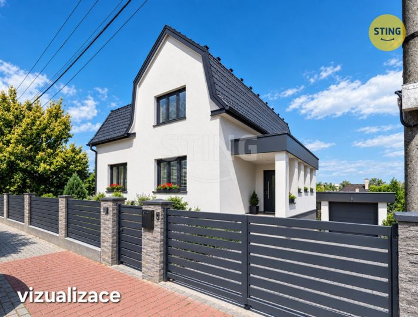
New to tracker — actual advert age unknown
Prodej domu/vily, 250 m²
Prodej domu/vily, 250 m²
Not stated → 12,500,000 CZK
Original advert ↗Daily market update · 2026-11-10 · Ostrava + 15 km
Data limitation: Prices are advertised, not completed transaction prices. Disappeared adverts are NOT proof of sold or rented status. Search radius may be unverified for individual locations. "New" means first observed since a comparable complete Sreality scan, not independently verified as newly published. "New to tracker" may reflect expanded or partial portal coverage. Older Sreality IDs and known cross-lists are excluded. Additional monthly rental charges are not reliably supplied in these search cards.

Prodej domu/vily, 250 m²
Not stated → 12,500,000 CZK
Original advert ↗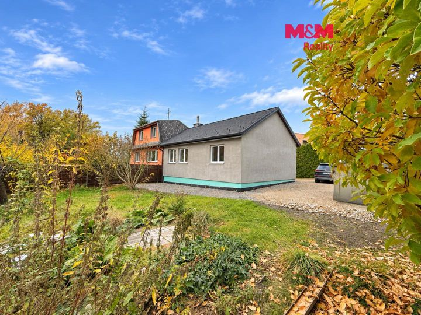
Prodej domu/vily, 60 m²
Not stated → 4,399,000 CZK
Original advert ↗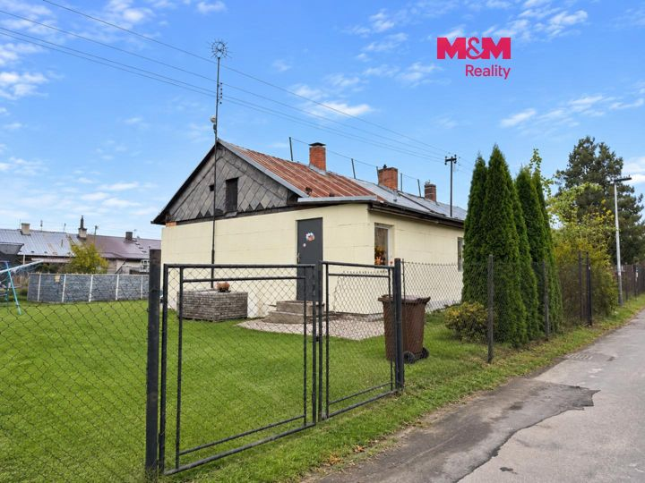
Prodej domu/vily, 70 m²
Not stated → 3,990,000 CZK
Original advert ↗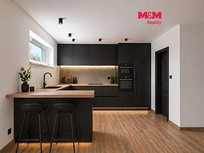
Prodej domu/vily, 114 m²
Not stated → 10,490,000 CZK
Original advert ↗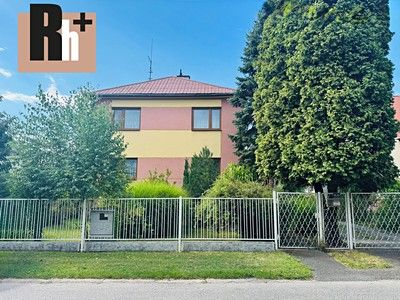
Poruba, Karviná
4,500,000 CZK → 4,500,000 CZK
Original advert ↗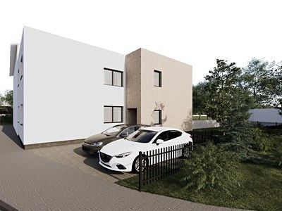
Bohumín, Karviná
2,799,999 CZK → 2,799,999 CZK
Original advert ↗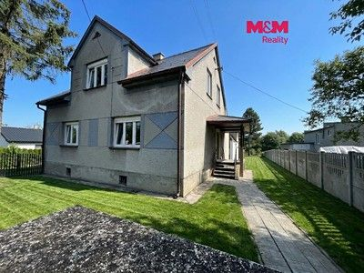
Rychvald, Karviná
5,900,000 CZK → 5,900,000 CZK
Original advert ↗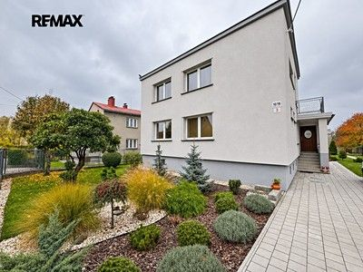
Fryštát, Karviná
Not stated → 6,800,000 CZK
Original advert ↗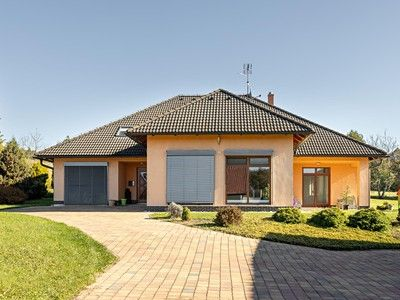
Horní Těrlicko, Karviná
16,600,000 CZK → 16,600,000 CZK
Original advert ↗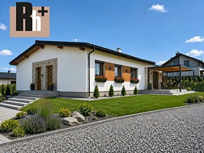
Sedlnice, Nový Jičín
6,350,000 CZK → 6,350,000 CZK
Original advert ↗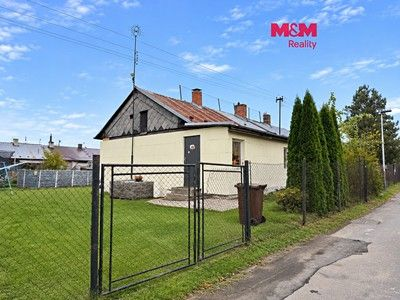
Heřmanice, Ostrava-město
Not stated → 3,990,000 CZK
Original advert ↗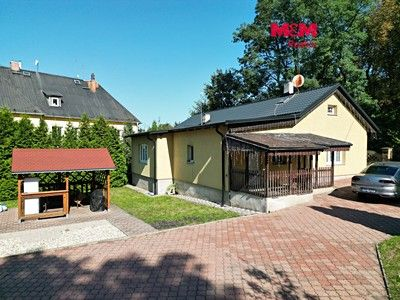
Hrušov, Ostrava-město
5,995,000 CZK → 5,995,000 CZK
Original advert ↗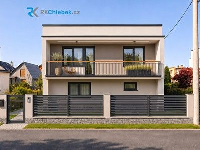
Dobrá, Frýdek-Místek
Not stated → 7,500,000 CZK
Original advert ↗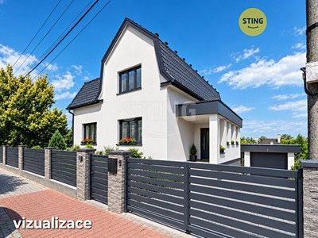
Ostrava, Ostrava-město
Not stated → 12,500,000 CZK
Original advert ↗Horní Datyně, Ostrava-město
Not stated → 10,490,000 CZK
Original advert ↗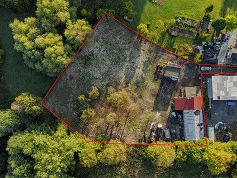
Prostřední Suchá, Karviná
3,100,000 CZK → Not stated
Original advert ↗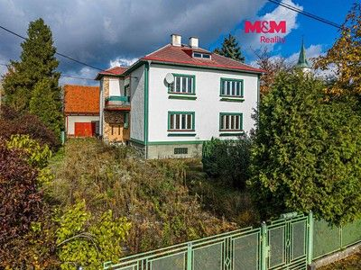
Horní Těrlicko, Karviná
6,490,000 CZK → Not stated
Original advert ↗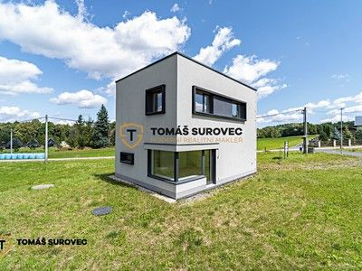
Horní Těrlicko, Karviná
6,690,000 CZK → 6,690,000 CZK
Original advert ↗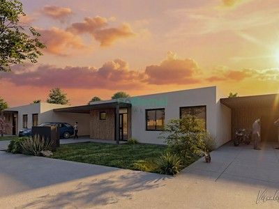
Prostřední Bludovice, Karviná
6,390,000 CZK → 6,390,000 CZK
Original advert ↗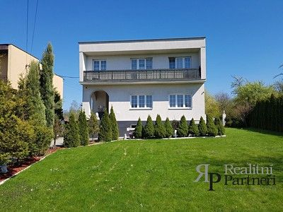
Muglinov, Ostrava-město
9,800,000 CZK → 9,800,000 CZK
Original advert ↗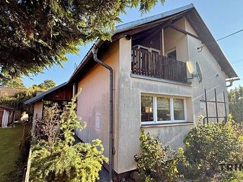
Klimkovice, Ostrava-město
5,990,000 CZK → 5,990,000 CZK
Original advert ↗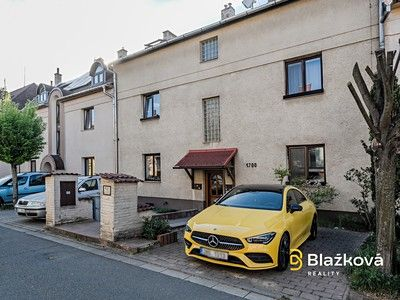
Frýdek, Frýdek-Místek
Not stated → 7,750,000 CZK
Original advert ↗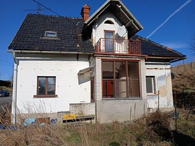
Pustějov, Nový Jičín
3,850,000 CZK → 3,850,000 CZK
Original advert ↗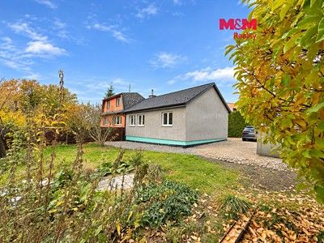
Heřmanice, Ostrava-město
Not stated → 4,399,000 CZK
Original advert ↗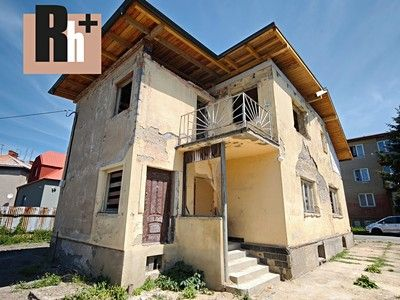
Muglinov, Ostrava-město
4,800,000 CZK → 4,800,000 CZK
Original advert ↗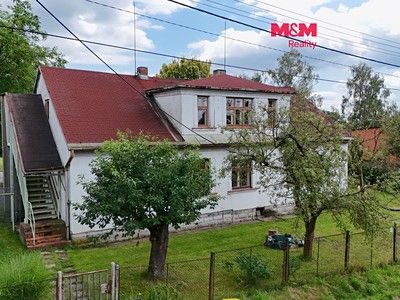
Šenov, Ostrava-město
4,390,000 CZK → Not stated
Original advert ↗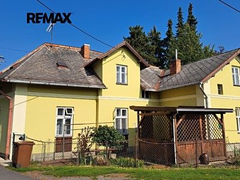
Příbor, Nový Jičín
Not stated → 2,500,000 CZK
Original advert ↗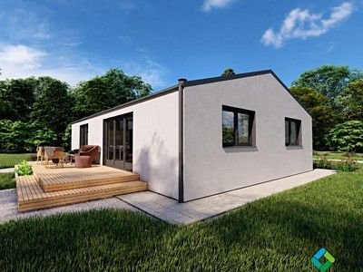
Petřvald, Karviná
6,100,000 CZK → Not stated
Original advert ↗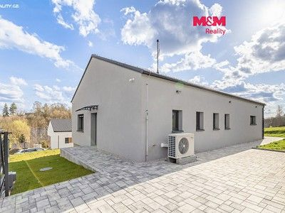
Žermanice, Frýdek-Místek
8,300,000 CZK → Not stated
Original advert ↗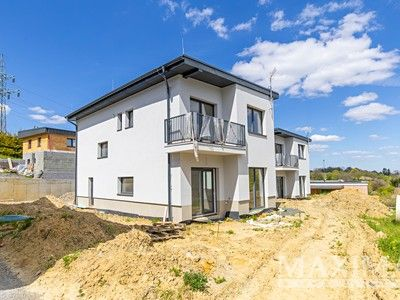
Koblov, Ostrava-město
13,019,000 CZK → 12,289,750 CZK -5.6%
Original advert ↗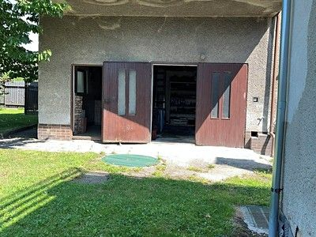
Jistebník, Nový Jičín
5,100,000 CZK → 5,100,000 CZK
Original advert ↗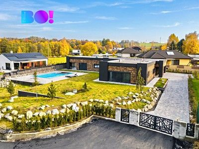
Horní Bludovice, Karviná
18,200,000 CZK → Not stated
Original advert ↗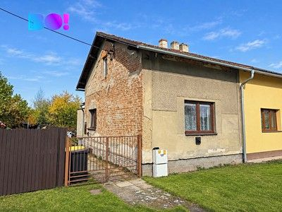
Studénka, Nový Jičín
Not stated → 3,990,000 CZK
Original advert ↗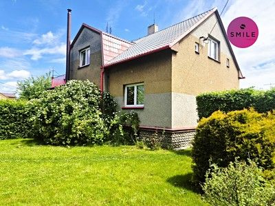
Rychvald, Karviná
5,000,000 CZK → 5,000,000 CZK
Original advert ↗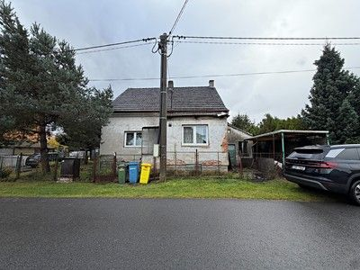
Ludgeřovice, Opava
4,650,000 CZK → 4,290,000 CZK -7.74%
Original advert ↗Ludgeřovice, Opava
4,650,000 CZK → 4,290,000 CZK
Original advert ↗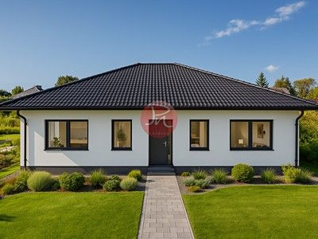
Petřvald, Karviná
9,710,000 CZK → 9,710,000 CZK
Original advert ↗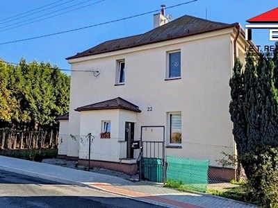
Radvanice, Ostrava-město
6,500,000 CZK → Not stated
Original advert ↗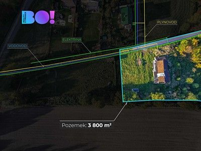
Albrechtice, Karviná
2,990,000 CZK → 2,990,000 CZK
Original advert ↗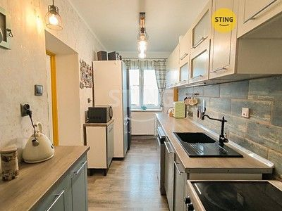
Vrbice, Karviná
4,590,000 CZK → Not stated
Original advert ↗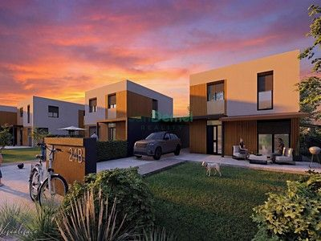
Prostřední Bludovice, Karviná
6,850,000 CZK → 6,850,000 CZK
Original advert ↗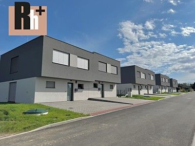
Ostrava, Ostrava-město
10,990,000 CZK → 10,990,000 CZK
Original advert ↗